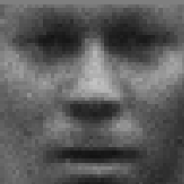
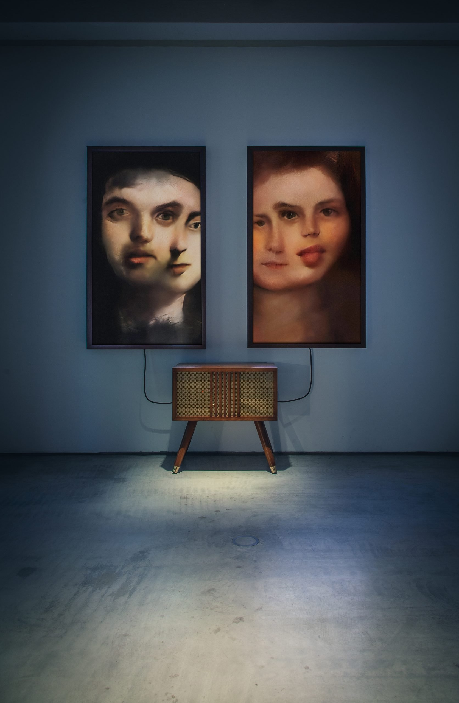
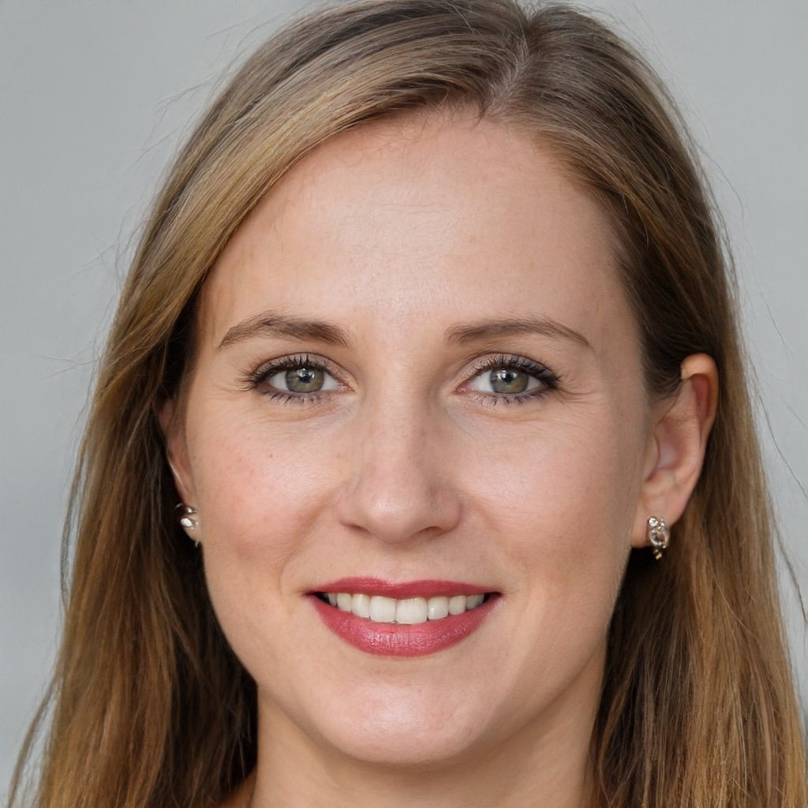
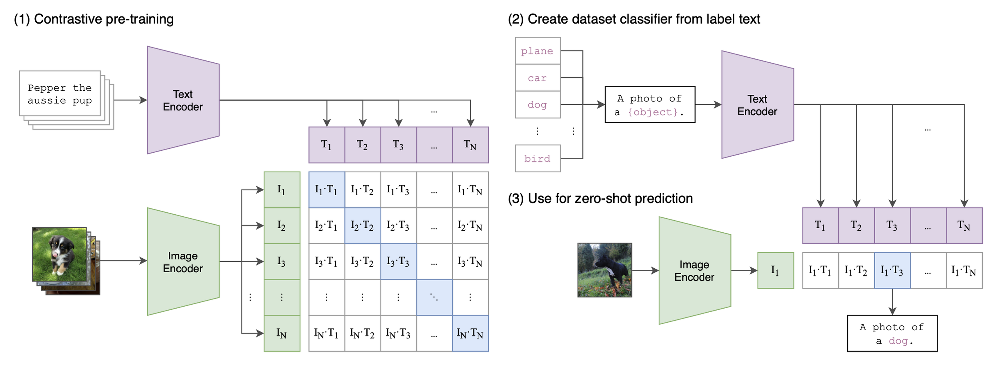
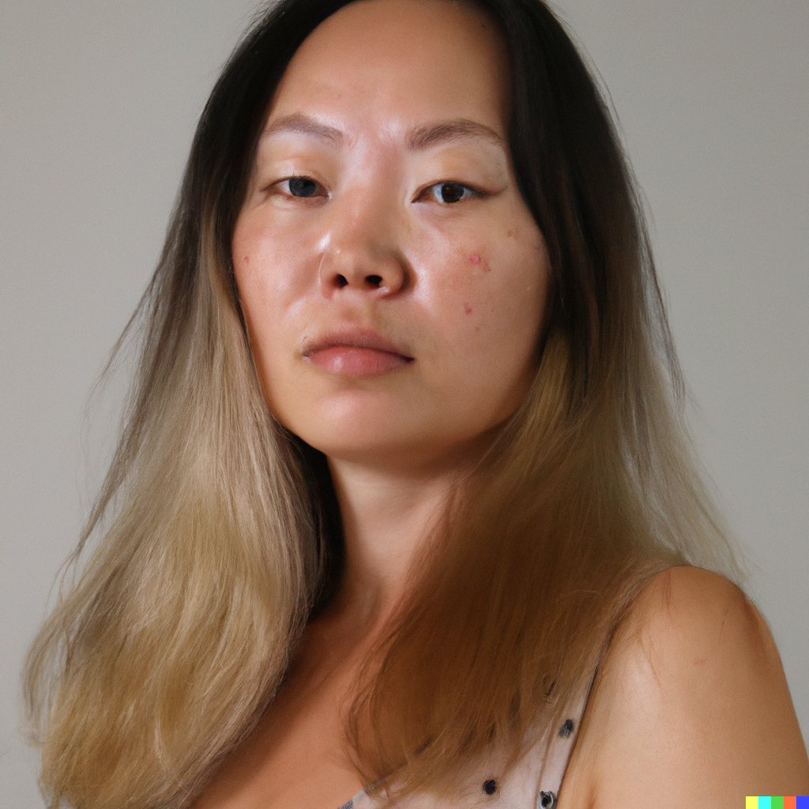
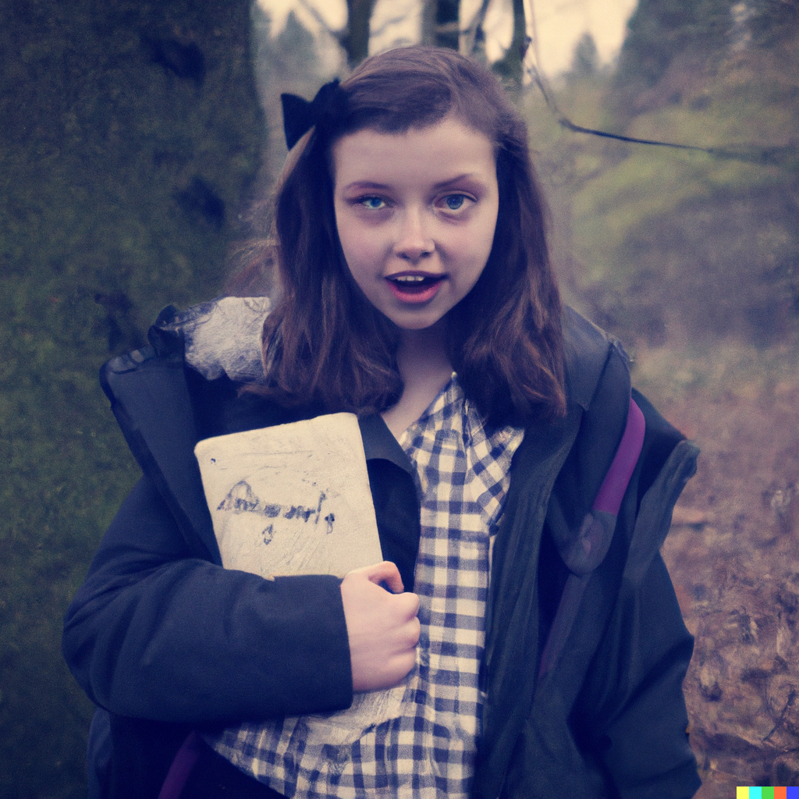
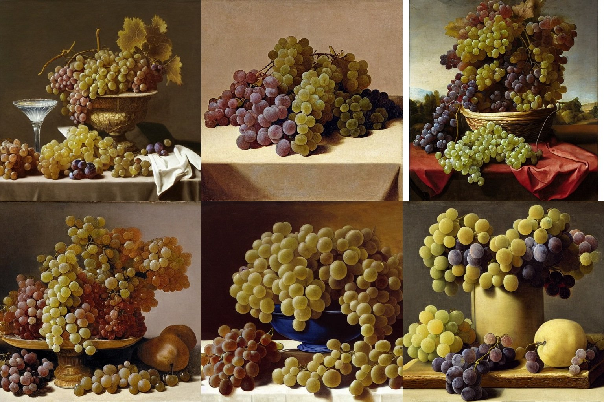

Ten Years of Image Synthesis
It's the end of 2022. Deep learning models have become so good at generating images that, at this point, it is more than clear that they are here to stay. How did we end up here? The timeline below traces some milestones – papers, architectures, models, datasets, experiments – starting from the beginning of the current "AI summer" ten years ago.
Edit: Since this post was on the front page of Hacker News I have received a few interesting pointers regarding the "pre-history" of image synthesis:
- Someone in the Hacker News comments pointed out that Hinton et al.'s deep belief nets were used to generate synthetic MNIST digits already in 2006, see A fast learning algorithm for deep belief nets (animations can be found here).
- Durk Kingma brought to my attention that variational autoencoders (VAEs) slightly precede GANs, see Auto-Encoding Variational Bayes and these early results on the Labeled Faces in the Wild dataset.
- @Merzmensch on Twitter emphasized the significance of DeepDream, which could be regarded as a proto-generative approach, for the artistic side of image synthesis. See Inceptionism: Going deeper into neural networks.
The Beginnings (2012–2015)
Once it was clear that deep neural networks would revolutionize image classification, researchers started to explore the 'opposite' direction: what if we could use some of the same techniques that work so well for classification (e.g. convolutional layers) to make images?

Dec 2012: Beginning of the current "AI summer". Publication of ImageNet classification with deep convolutional neural networks which, for the first time, brings together deep convolutional neural networks (CNNs), GPUs, and very large, Internet-sourced datasets (ImageNet).
Dec 2014: Ian Goodfellow et al. publish Generative adversarial nets. The GAN is the first modern (i.e. post-2012) neural network architecture dedicated to image synthesis, rather than analysis.* It introduces a unique approach to learning based on game theory, where two subnetworks, a "generator" and a "discriminator" compete. Eventually, only the "generator" is kept from the system and used for image synthesis.
Nov. 2015: Publication of Unsupervised representation learning with deep convolutional generative adversarial networks, which describes the first practically usable GAN architecture (DCGAN). The paper also brought up the question of latent space manipulation for the first time – do concepts map to latent space directions?
*Please see comment at the top.
Five Years of GANs (2015–2020)

GANs are applied to various image manipulation tasks, e.g. style transfer, inpainting, denoising, and superresolution. GAN architecture papers explode. At the same time, artistic experimentation with GANs takes off and first works by Mike Tyka, Mario Klingenmann, Anna Ridler, Helena Sarin, and others appear. The first "AI art" scandal takes place in 2018. At the same time, the transformer architecture revolutionizes NLP – with significant consequences for image synthesis in the immediate future.
Jun 2017: Publication of Attention is all you need (see also this great explainer). The transformer architecture (in the form of pre-trained models like BERT) revolutionizes the field of natural language processing (NLP).
Jul 2018: Publication of Conceptual captions: A cleaned, hypernymed, image alt-text dataset for automatic image captioning. This and other multimodal datasets will become extremely important for models like CLIP and DALL-E.

2018–20: Series of radical improvements of the GAN architecture by researchers at NVIDIA (StyleGAN, latest: StyleGAN2-ada, introduced in Training generative adversarial networks with limited data). For the first time, GAN-generated images become indistinguishable from natural images, at least for highly optimized datasets like Flickr-Faces-HQ (FFHQ).
May 2020: Publication of Language models are few-shot learners. OpenAI's LLM Generative Pre-trained Transformer 3 (GPT-3) shows the power of the transformer architecture.
Dec 2020: Publication of Taming transformers for high-resolution image synthesis (see also the project website). Vision transformers (ViTs) show that the transformer architecture can be used for images. The approach presented in the paper, VQGAN, produces SOTA results on benchmarks.
The Age of Transformers (2020–2022)
The transformer architecture revolutionizes image synthesis, initiating a move away from GANs. 'Multimodal' deep learning consolidates techniques from NLP and computer vision, and 'prompt engineering' replaces model training and tuning as the artistic approach to image synthesis.


Jan 2021: Publication of Zero-shot text-to-image generation (see also OpenAI's blog post) which introduces the first version of DALL-E. This version works by combining text and images (compressed into "tokens" by a VAE) in a single data stream. The model simply "continues" the "sentence". Data (250M images) includes text-image pairs from Wikipedia, Conceptual Captions, and a filtered subset of YFCM100M. CLIP lays the foundation for the 'multimodal' approach to image synthesis.
Jan 2021: Publication of Learning transferable visual models from natural language supervision (see also OpenAI's blog post) which introduces CLIP, a multimodal model that is a combination of vision transformer and regular transformer. CLIP learns a "shared latent space" for images and captions and can thus label images. Trained on numerable datasets listed in appendix A.1 of the paper.

Jun 2021: Publication of Diffusion models beat GANs on image synthesis. Diffusion models introduce an approach to image synthesis different from the GAN approach. They learn by reconstructing images from artificially added noise ("denoising"); they are related to variational autoencoders (VAEs), see also this explainer.
Jul 2021: Release of DALL-E mini, a replication of DALL-E (smaller and with few adjustments to architecture and data, see technical report). Data includes Conceptual 12M, Conceptual Captions, and the same filtered subset of YFCM100M that OpenAI uses for the original DALL-E model. The absence of any content filters or API restrictions provided significant potential for creative exploration and led to an explosion of 'weird DALL-E' images on Twitter.
2021–2022: Katherine Crowson publishes a series of CoLab notebooks exploring ways to make CLIP guide generative models, e.g. 512x512 CLIP-guided diffusion and VQGAN-CLIP (Open domain image generation and editing with natural language guidance, only published as preprint in 2022 but public experiments appeared as soon as VQGAN was released). Like in the early GAN days, artists and hackers develop significant improvements to existing architectures with very limited means which are then streamlined by corporations and commercialized by "startups" like wombo.ai.
Apr 2022: Publication of Hierarchical text-conditional image generation with CLIP latents (see also OpenAI's blog post). The paper introduces DALL-E 2, which builds upon GLIDE (GLIDE: Towards photorealistic image generation and editing with text-guided diffusion models) released only a few weeks earlier. At the same time, renewed interest in DALL-E mini due to restricted access to, and intentional limitations of, DALL-E 2. Data consists of "a combination of publicly available sources and sources that we licensed", according to the model card, and of the full CLIP and DALL-E (see above for both) datasets according to the paper.
May/June 2022: Publication of Photorealistic text-to-image diffusion models with deep language understanding and Scaling Autoregressive Models for Content-Rich Text-to-Image Generation which introduce Imagegen and Parti, Google's answers to DALL-E 2.
AI as Photoshop (2022–today)
While DALL-E 2 set a new standard for image models, its immediate commercialization and many restrictions meant that creative uses were limited from the start. While DALL-E 2 was already released, users thus continued to experiment with smaller models like DALL-E mini. All of this changes with the release of Stable Diffusion, which arguably marks the beginning of the 'Photoshop era' of image synthesis.

August 2022: Stability.ai releases Stable Diffusion (High-resolution image synthesis with latent diffusion models, see also the unusually comprehensive Wikipedia page), a model that enables photorealism on par with DALL-E 2. Other than DALL-E 2, the model is available to the public almost immediately and can be run within CoLab and on the Huggingface platform.
August 2022: Google's DreamBooth (DreamBooth: Fine tuning text-to-image diffusion models for subject-driven generation) provides increasingly fine-grained control of diffusion models. Even without such additional technical interventions, however, it has become feasible to use generative models like Photoshop, starting from a rough sketch and adding generated modifications layer by layer.
October 2022: Shutterstock, one of the largest stock photo companies, announces a collaboration with OpenAI to offer/license generated images, anticipating that the market for stock photos will be heavily impacted by generative models like Stable Diffusion.